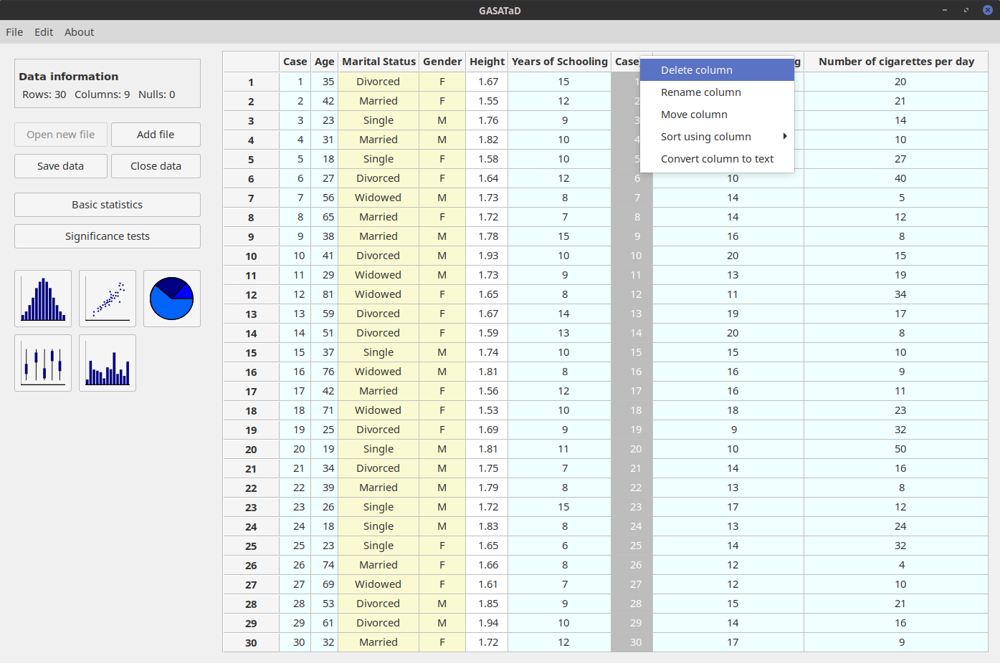
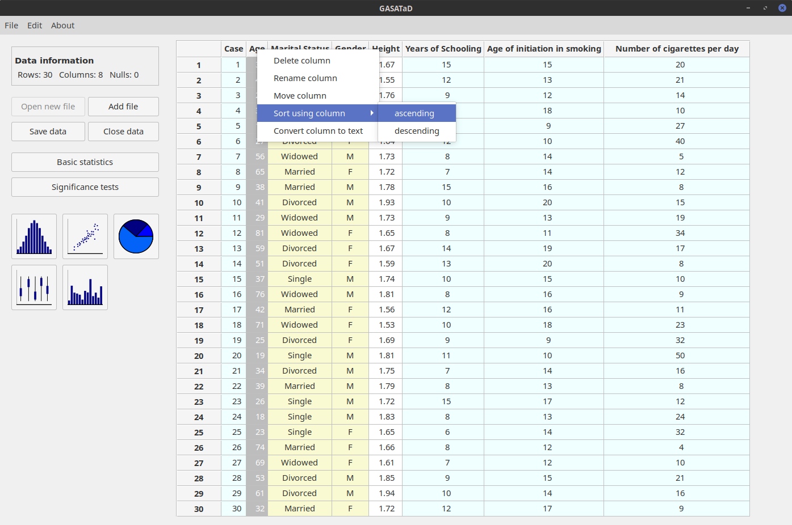
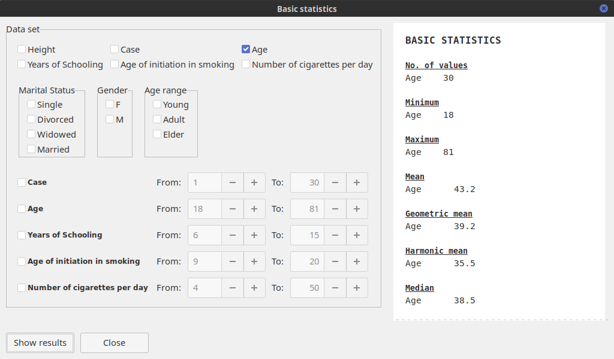
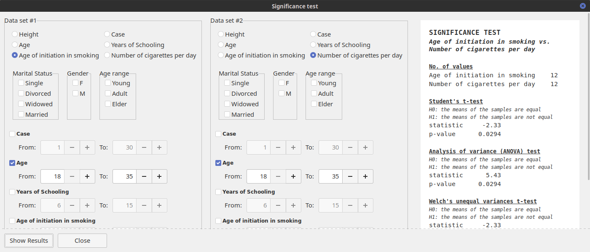

Main features of GASATaD
GASATaD is a free, open source statistical program that offers the following functionalities:
Merges data of different nature from different files.
Calculates basic statistical results over the data.
Performs different significance test.
Generates and exports high quality plots.
Classifies data into different categories.
Hardware and software requirements
Basic hardware requirements to run GASATaD are 3GB of RAM, and 5GB free space of hard disk.
The application runs on GNU/Linux, 32 and 64 bits (e.g. Ubuntu Linux); Microsoft Windows, 32 and 64 bits; and MacOS, 32 and 64 bits.
Interface description
The main window of the application allows users to access all the functionalities.

On the right side, data will be displayed on a table when files are opened. Initially, columns are labeled with letters and the rows using numbers. Numerical values appear in white cells whereas textual data will be presented with yellow background.
On the left panel, the upper area corresponds to information about the data (number of rows, columns and null values) . Just under this area, buttons are available to manage data and files, and to perform statistical analyses (basic or significance). Below, plotting functionalities are included.
A five minutes guided example in GASATaD
First, download .csv data files from https://milegroup.github.io/gasatad/#download. Two files are provided: testfile1.csv and testfile2.csv.
-
Load data:: open both files with GASATaD, using first Open new file and then Add file, on the left panel. The data will be shown as in the figure below.

-
Move column: select the column Marital Status, press the right mouse button; click on Move column and enter the desired position (see below).

-
Delete a column: select the column Case_2, right-click and use the Delete column option. Rows can be deleted likewise.
 -
Reorder the rows of the table: select the Age column and then you can either use the main menu (Edit → Sort using selected column → ascending), or right-click and the Sort using column → ascending option.
 -
Divide the data into new categories: on the main menu, use the Edit → Add text column option. On the new window that appears, complete the data as shown below.
Afterwards, a new column labeled Age ranges will be created. This column will classify the rows into three different age ranges: young, adult and elder.
-
Calculate basic statistics of a numerical column: on the left panel, click on the button Basic statistics, and select the column Age. You can restrict which values of the column are going to be used, and, after pressing Show results, a basic statistical analysis of these values is presented.
 -
Perform a comparative analysis between variables: on the main window, click on the button Significance tests. Select two numerical columns to be used which values of each column are to be included in the test. After pressing Show results values are presented for the following significance tests: standard t-test, Welch’s, Kolmogorov-Smirnov, and Wilcoxon rank-sum.
 -
Plot data: on the main window, click on the icon representing a pie-chart. Select the tag Age range and, after pressing Ok, a new window containing the plot will open.
The plot can be modified by clicking on the buttons on the bar at the bottom of the image. Button can be used to displace the plot along both the x and y axis. Parts of the graph can be zoomed with button . Margins can be modified by means of button , and actions can be either undone or redone with buttons . Modifications can be removed by using the button . Finally, the plot can be saved in different formats, such as .epg, .pgf, .pdf, .png, .ps, .raw, and .svg., by clicking on button
-
Exit: to quit GASATaD, just use either the menu option File -> Quit or close the window using the top bar.